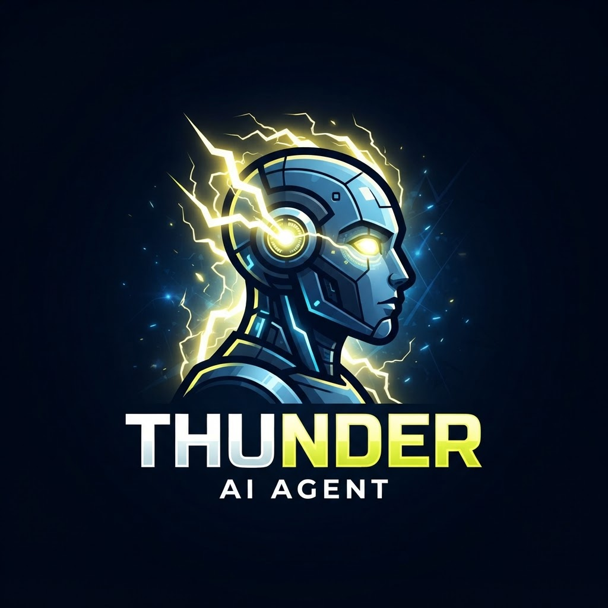
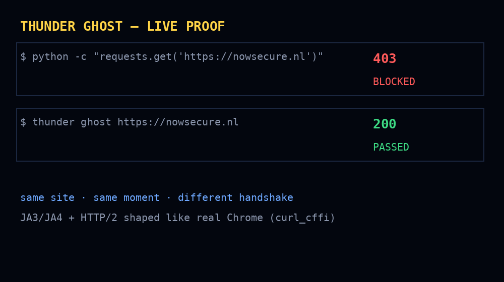
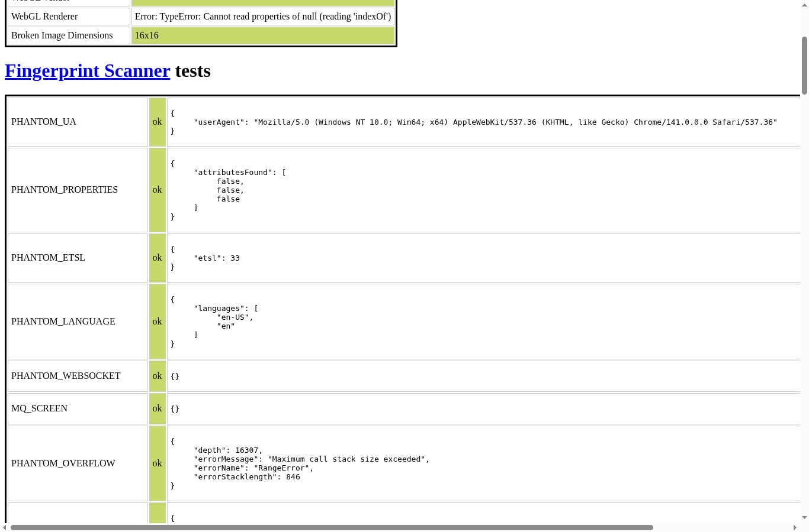
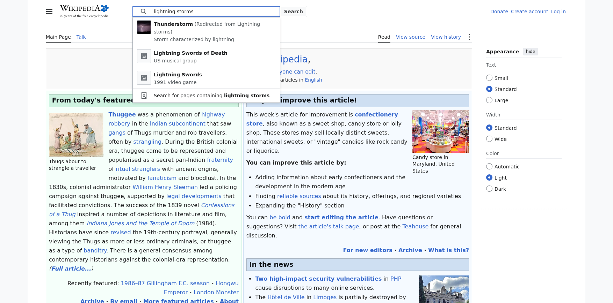

The human engine for AI agents. A body, a skin, a human hand, a ghost, and a mind — so your agent works on the web like a person, not a bot.
Every layer is real code, installable today. No dashboards to babysit — one library, one MCP server.
A persistent stealth browser session. Same cookies, same screen, same history — a returning human, not a new visitor.
thunder.BodyA consistent device fingerprint: UA, platform, screen, WebGL, canvas noise — generated from real-world distributions, saved per profile.
thunder.SkinBézier mouse paths with overshoot and micro-corrections, Fitts-law clicks, lognormal keystrokes, rare typos fixed with backspace, eased scroll.
thunder.HandA real browser's TLS (JA3/JA4) and HTTP/2 handshake with zero browser weight — for the fetches that don't need JavaScript.
thunder.GhostPowered by stewmind-1.7b — and pairs with ANY model: Ollama, LM Studio, vLLM, GPT, or fully offline.
StewMindScreenshots routed to any vision model you choose. The body's eyes become understanding.
describe_image()Senses every challenge on a page, avoids most with skin + hand, and plugs into your own solver key for your own accounts.
thunder.captchaClaude Desktop, Cursor, STEW — any MCP client can drive the body with ten human tools.
thunder serveThunder runs fully local — pair it with Ollama or LM Studio and it never touches the cloud. Or point it at any OpenAI-compatible endpoint.
from thunder.mind import StewMind
mind = StewMind.backend_ollama("stewmind:1.7b") # fully offline
mind = StewMind(endpoint="http://localhost:1234/v1") # LM Studio / vLLM
mind = StewMind.backend_huggingface() # stewmind on HF
mind = StewMind.backend_local() # transformers, offline
plan = mind.think(goal="log in and download the invoice",
page=await body.read())
# {"action": "type", "target": "#email", "value": "…", "reason": "…"}
Verified live: initialize ✓ · tools/list ✓ · thunder_open ✓ · thunder_ghost ✓. Paste this into your Claude Desktop (or any MCP client) config and Thunder becomes your agent's body:
{
"mcpServers": {
"thunder": {
"command": "pip",
"args": ["run", "--with", "thunder-agent", "python", "-m", "thunder.mcp_server"]
}
}
}Then tell Claude: "Open example.com with thunder_open, then read the page with thunder_read." Tools: thunder_open thunder_read thunder_click thunder_type thunder_scroll thunder_look thunder_ghost thunder_captcha thunder_think thunder_rest
Captured from a real thunder.Body session. These are actual artifacts from the test run, unedited.
🎥 Thunder in action, recorded live: real Google Chrome walks the classic bot-detection gauntlet with *every test passed* — then signs up for an account like a person: bezier mouse, human keystroke cadence, natural pauses. No edits.


